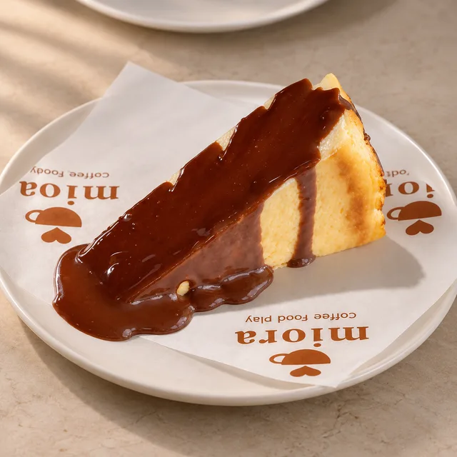

COFFEE, FOOD & A LITTLE JOY
Bir kahve.
Güzel bir an.
Sevdiğin kahve, yanına güzel bir şey.
Miora’da küçük bir mola ver.
Biraz kendine, biraz sevdiklerine.

MİORA EŞLEŞTİRMESİ
Bazı şeyler
birlikte daha güzel.
Cappuccino’nun yumuşacık köpüğü, San Sebastian’ın kremamsı dokusu. Kendine küçük bir iyilik.
Cappuccino + San Sebastian430 ₺
İki ürünün normal toplam fiyatı. İndirim içermez.Bir fincanın etrafında buluşalım.
@mioracoffeetr